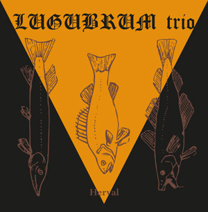
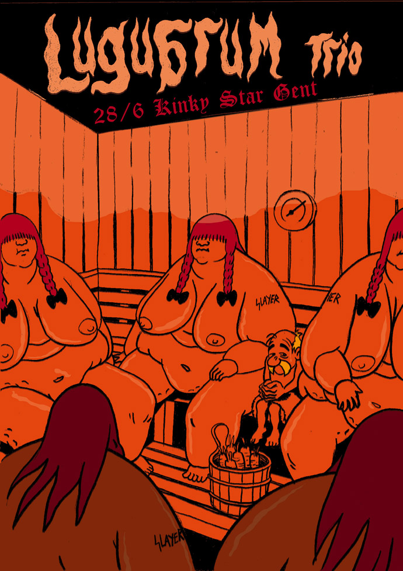

- 14th May 2021 -
Lugubrum Trio 'BRUYNE KROON' CD out NOW on Those Opposed Records !!!
Order at Those Opposed Records - Lugubrum Bandcamp
DLP TBA for august / september on Aphelion Productions

- 1st April 2021 -
On April 1st, Lugubrum release the digital single 'VETERANUS' featuring two songs from the upcoming 'BRUYNE KROON' double album!
- 2nd March 2020 -
Out Now:
"Plage Chômage" LP Aphelion Productions and CD Those Opposed Records
"de ware hond" LP Aphelion Productions
- 9th November 2019 -
Upcoming shows:
Moscow / St. Petersburg december 6 / 7 2019
New album "Plage Chômage" is scheduled for release in february 2020
- 12th September 2018 -
This show will be your first chance to hear material for the next album, entitled "Plage Chômage" !!!!!
- 7th February 2018 -
New interview at http://www.bardomethodology.com/articles/2018/02/07/lugubrum-interview/
- 13th January 2018 -
WAKAR CARTEL out now on
Aphelion Productions
(LP) and
Those Opposed Records
(CD)!

- 7th August 2017 -
Lugubrum trio back on the road! From the 'Wakar Cartel' photo
shoot by Storm Calle.
- 25th March 2017 -
Recordings for 'Wakar Cartel' are mostly finished, there are
some vocals and percussion still to be done.
Lugubrum play at Ieperfest, this august 11-13th!
http://www.ieperfest.com
'De Zuivering' LP is out now on
http://aphelionproductions.net!!
- 11th March 2016 -
Working on a new freeform album! Yes, it will feature lyrics about Aalschuim, what did you think?
Meanwhile, read this http://yourlastrites.com/articles/989/pass-the-carrots--please
Thanks to Michael Wuensch for this accurate and original re-write of our discography.
- 24th February 2016 -
More shows in 2016:
Roadburn, sat april 16th
Vooruit Gent, wed june 15th
Radiant Art Festival, sat july
9th
- 7th September 2015 -
Out now:
LUGUBRUM trio - Herval LP
LUGUBRUM - Live in Amsterdam LP
http://www.aphelionproductions.net
Lugubrum / Urfaust - Het Aalschuim der Natie (7" vinyl)
http://www.van-records.de

- 25th April 2015 -
Show announcements:
28/06 Kinky Star in Gent
31/10 Het Bos in Antwerpen

- 9th March 2015 -
'HERVAL' preview!
- 28th November 2014 -
LUGUBRUM will play at Veneration of the Dead, Rotterdam on
saturday April 4th 2015!
https://www.facebook.com/venerationofthedead
- 24th November 2014 -
BARDITUS IS DEAD! LONG LIVE BARDITUS!
Barditus has announced his retirement from Lugubrum.
Hails to him for a partnership of beer for 22 years. Brown
blessings on your new path!
Lugubrum will continue their exploration as a trio.
'Herval' will be the first album in this line-up.
Midgaars will take over the vocals, like he did on 2001's
'Bruyne Troon'.
- 1st October 2014 -
Now there's an offical
https://www.facebook.com/lugubrum
hosted by Noctiz.
Check it for latest news and all kinds of crap we don't want on
this nice site.
- 28th April 2014 -
This spring / summer LUGUBRUM will record their 10th full length album, "HERVAL"!
- 13th June 2013 -
De Totem DLP is out on Aphelion!
http://www.aphelionproductions.net/
Next live show:
Aurora Infernalis
- 16th December 2012 -
After 20+ years on the low road LUGUBRUM have finally arrived in Scotland!
Two exclusive shows will be played:
Friday May 10th
The Moorings Bar
- Aberdeen. Support from Bonesaw + TBC
Saturday May 11th
Bannermans
- Edinburgh. Support from Haar +TBC (event)
- 28th December 2011 -
Lugubrum appears in Zero Tolerance Mag issue 44 with a feature and review. http://ztmag.com/
- 18th December 2010 -
- 17th August 2010 -
Recording in progress!
Lugubrum have started recordings for the new album 'FACE LION
FACE OIGNON'!
CD version will be out in late winter on Those Opposed records.
Extracts from the Albino de Congo album were added as a medley on the samples page.
- 11th March 2010 -
Lugubrum confirms plans for a new album! Midgaars is working on revolutionary tunes following general Bonaparte's expedition to Palestine. Midgets are digging a desert bunker where soon rehearsals will start once more... more info/pics soon.
The discography page was updated with info on the recent N.O.I.R. split LP, released by Those Opposed Records. Lugubrum is featured with 3 live tracks.
- 7th July 2009 -
Lugubrum will play at Sinister Howling Fest at Speyer (Ger) on september 19th, the only chance to see the band live this year. Band members are enjoying themselves with several other projects (Acromegal lives!!!) and even some new Lugubrum material is written. No recordings are planned, though.
- 22nd April 2008 -
- 10th November 2007 -
Press statement by Midgaars: 2007 has been a year of trial and setback for Lugubrum, since the release of ‘de ware hond’ every member of the band has suffered from one physical breakdown to the next, resulting in treatment, amputation, medication and a temporary or even permanent alcohol prohibition! Adding the loss of our headquarters and desertions from the ranks, Lugubrum’s continuation was hanging by a thread...
However, like a dung beetle seeing its precious ball of manure rolling down the mountainside, we went all the way back down to retrieve our treasure and start again, against all odds.
The old guard (Barditus, Midgaars and Svein) injected young blood into the worn veins in the shape of Noctiz (Gotmoor, Paragon Impure, Dead Inside) who will be handling the bass from now on. This line up will perform live for the first time at the final Waking the Dead Festival in Arnhem (NL) on 22/12/07 and in january they will record the new Lugubrum album ‘albino de Congo’.
Old Grey Hair’s schedule has consequently been delayed, releases will continue in 2008, when and in which order will be announced later on.
Untill then; MEDICATE US OR DIE!!!
- 26th June 2007 -
In 2008 Lugubrum plan to re- capture Belgian Congo... with
Boersk Blek Metle!
The band’s 8th full length (follow-up to the widely
acclaimed ‘de ware hond’) entitled ‘ALBINO DE
CONGO’, will be another daring expedition into the heart
of brown-ness and is scheduled for live- recording in a Kinshasa
based studio, late 2007.
OGH release schedule:
2007 OGH005 - LUGUBRUM ‘De Zuivering / Al Ghemist’
(split re-release)
2008 OGH006 – LUGUBRUM ‘albino de Congo’ (new
full length)
- 6th March 2007 -
'DE WARE HOND' was released and is available through Old Grey Hair. Check the discography and lyrics pages for info.
- 11th January 2007 -
LUGUBRUM will play live at (K-RAA-K)3 fest, saturday march 3rd,
KC België - Hasselt
http://www.kraak.net/
- 27th December 2006 -
Check out a
video sample from
the upcoming 'DE WARE HOND' album (OGH004), out march '07.
(images courtesy of Theodore Battaglia & Lugubrum)
New live dates will be announced soon!
- 9th November 2006 -
Check out the reviews of the 'Live in Amsterdam' release by Terrorizer, Aardschok, Guts of Darkness and Aquarius Recs.
- 15th August 2006 -
Lugubrum's 'Live in Amsterdam' CD out now on Old Grey Hair
Records!
- 10th August 2006 -
Awaiting the official release on Old Grey Hair recs., a sample of the 'Live in Amsterdam : Trampled Brass / Midget Robes' was added, together with a tracklisting and more info on the discography page.
- 27th June 2006 -
Gent, june 25th, it's raining cats, dogs and shattered glass:
LUGUBRUM records a 3rd session for 'De Ware Hond' on tape
- 7th June 2006 -
Lugubrum zoekt vaste bassist
vereisten: vertrouwd zijn met de Lugubrum discografie (van
buiten kennen hoeft dus niet) / filosofie, enige technische
vaardigheid (niet volledig afhankelijk zijn van partituur) en
naast metal handig zijn in meerdere muzikale stijlen…
en bas spelen, geen panfluit…
repetities vinden elke zondag plaats in het Gentse, evenals de audities
let wel: we zoeken iemand die vast lid van de groep wil worden, m.a.w. iemand die zich in het eeuwige goudbruine licht wil wentelen, maar tevens de beschimpingen en minachting van alle levende wezens kan dragen…
geen kleuters a.u.b
dwergen hebben een aanzienlijke voorsprong op andere supplicanten
geïnteresseerden kunnen contact opnemen met midgaars@hotmail.com
- 13th April 2006 -
Lugubrum's 'Heilige Dwazen' LP out now on Old Grey Hair
Records!
- 15th March 2006 -
Last month, Lugubrum moved out to a cabin in the Ardennes and recorded the majority of their 9th work, entitled 'DE WARE HOND' ; no overdubs or special effects, but live, trancelike sessions featuring the band on highest levels of possession, haunted by ancient spirits... A sequel to 'Heilige Dwazen' only in the philosophical sense, the music takes yet another turn into the unexpected... due for release on Old Grey Hair Records in early '07.
Out next month on OGH: 'Heilige Dwazen' LP.
'Heilige Dwazen' was reviewed in Terrorizer issue 142, read it here.
- 26th January 2006 -
Lugubrum is featured in the february issue of Metal Maniacs;
read the interview
here.
Aquarius Recs. also
reviewed 'Helige
Dwazen'.
- 12th January 2006 -
For you oldschool maniacs : Tanhu Records (HU/D) has released a MC version of 'De Zuivering' featuring the 6 original tracks + a bonus live version of 'Pankraker'! Original artwork and nicely printed. Contact : tanhu@warrior.hu
This release is dedicated to Julien, bartender of 'Den Hoorn', Zomergem (1947-2002)! He beered us...and died anyway...Respect!
- 11th January 2006 -
There's a first review of 'Heilige Dwazen' from blabbermouth.net and the bio had an update.
- 1st January 2006 -
Lugubrum's 'Heilige Dwazen' out now on Old Grey Hair Records!
- 30th November 2005 -
Click the picture:
- 22nd November 2005 -
Lyrics and discography info on the latest release 'Heilige Dwazen' was added.
- 5th October 2005 -
Beneath Brown is Grey...: Old Grey Hair... Records?
In january all will be unveiled: the Beard will come home!
For now we offer you a new, exclusive Lugubrum shirt, black with
carrot-orange print; logo + leaking beer barrel... Casual wear
for the secluded alcoholic or the public masturbator...
Contact
midgaars@hotmail.com
for info.
- 9th August 2005 -
september 24th: a Battle of Beards
Pirate poet or mad monk; he's the only true contender to
Barditus's hairy throne...
SLOSSE appears on the new album 'Heilige Dwazen'.
- 4th August 2005 -
'Heilige Dwazen' (cd) is finally out on BloodFireDeath
records!
bfd.media@gmail.com
Lp will follow within a couple of months.
- 2nd July 2005 -
Lugubrum is featured in issue 133 of Terrorizer; the interview
is accompanied by a full-colour picture
from the 'Anal Gland session' by Theodore 'the apprentice'
Battaglia.
Amsterdam was great! Thanks to all the handicapped - and to a
lesser degree the non-handicapped -
fans who showed up!
- 10th June 2005 -
Saturday september 24th @
the 162, Hekelgem: "'t Boerenleven" or:
Lugubrum v. Skaldic Curse (UK), support by Histoire Noire!
Clogs and carrots obligatory!
And Lugubrum is featured in the june issue of Ruis:
www.kraak.net
- 22nd April 2005 -
Lugubrum plays support for Sunn o))) on june 28th at the
Amsterdam Paradiso.
conspiracyrecords.blogspot.com
- 17th April 2005 -
In expectation of 'Heilige Dwazen' 's imminent release, here are
the song titles for you to read and weep:
holy fools embodied
the kiss on the anus
at the base of their tail
though chained
we slyly sucked stolen bread
on anemone meteorites
Furthermore, two
samples from the
album are added!!!
- 16th March 2005 -
Christcrusher (UK) is offering exclusive Lugubrum shirts! Cult material featuring two obscure dancing midgets and beerusordie logo on the back! www.christcrusher.com
- 10th February 2005 -
Lugubrum plays live at London's Underworld on march 7th! Support
by Skaldic Curse and others.
www.theunderworldcamden.co.uk